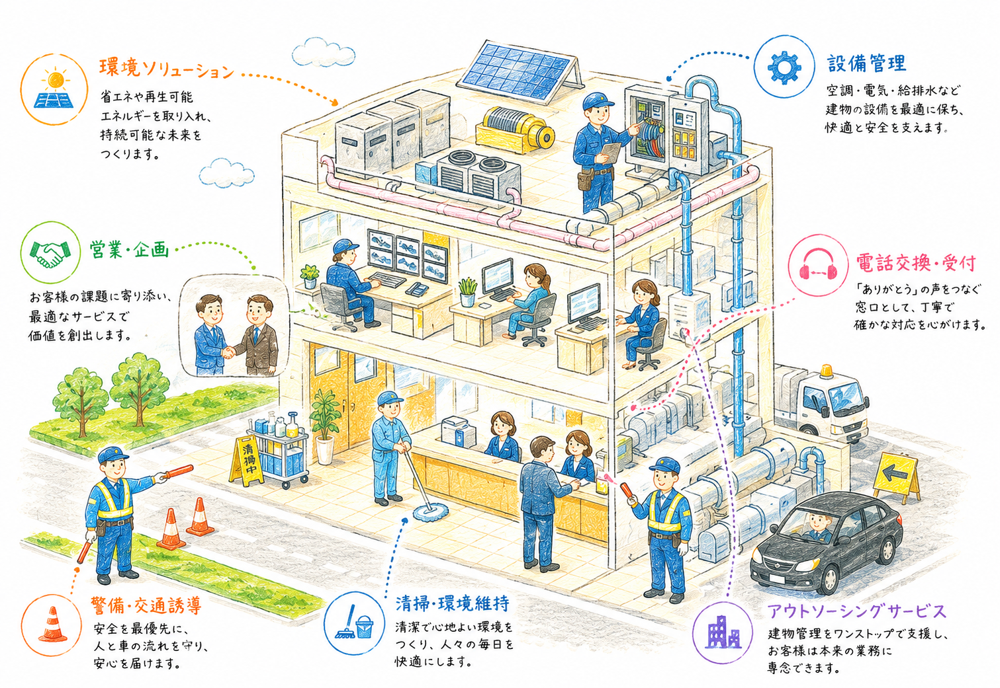

紹介からはじまった、新しいつながり。
熊本の街と暮らしを支えるオーファスの仕事へようこそ。

CLEANING FACILITY SECURITY MANAGEMENT
社員・スタッフから紹介を受けて、このページをご覧いただいたあなたへ。
今すぐ転職を考えている方も、まだそこまで考えていない方も。まずはオーファスがどんな会社なのか、少しだけ知ってみませんか？
紹介されたからといって、応募を決める必要はありません。

誰かの「ここ、良い会社だよ」という一言から始まるつながりを、私たちは何よりも大切にしています。
オーファスは、熊本を中心に建物の安全・快適な環境を支える総合ビルメンテナンス会社です。
清掃、設備管理、警備、電話交換、顧客管理、労務管理など、さまざまな仕事を通して地域の暮らしを支えています。
当たり前のように清潔で、安全な空間。その日常を守り続けることが、私たちの変わらない使命です。
単なる作業の提供にとどまらず、お客様の環境課題に寄り添い、信頼されるパートナーを目指します。
逓信省（旧・郵政省）への物資納入から歴史が始まりました。戦後の復興期の中、真心を込めたサービスで地域に寄り添いました。
熊本大水害をきっかけに、建物の清掃・設備管理などを手掛けるビルメンテナンス業へ進出。その後、環境衛生や工事など幅広い事業へと拡大を遂げました。
OHFASホールディングス体制へと移行し、大森産業から「株式会社オーファス」へ社名変更。さらなるサービス品質の向上へ踏み出しました。
社員・スタッフ約635名。熊本の街と人々の安心な日常を守る存在として、今日も新しいご縁を紡いでいます。

商業施設、オフィスビル、病院など。使う人が気持ちよく過ごせるよう、細やかな心配りで美しさを保ちます。

空調、電気、給排水など建物の心臓部を定期点検。安全に稼働し続けるよう、見えない場所から守ります。

施設内の巡回や出入管理。あたたかな挨拶と確かな安全意識で、訪れるすべての人に安心を届けます。

病院や施設などでの代表電話対応。丁寧で落ち着いた声の対応で、スムーズに必要な窓口へとつなぎます。

お客様の建物や施設に関するお困りごとをヒアリング。より快適な空間をつくるための改善提案を行います。

現場で活躍するスタッフのシフト調整や就業環境のサポート。みんなが安心して長く働ける体制を整えます。


紹介されたリンクから、まずはゆっくりページを眺めてみてください。
どんな仕事があるのか、どんな人が働いているのかを感じていただきます。
ご自身の通いやすいエリアや興味のある職種をチェック。
「週3日でもいける？」「未経験でも大丈夫？」など何でもご相談ください。
納得がいき、ご希望される場合のみ、面談や選考へと進みます。
仕事のこと、勤務地のこと、シフトのこと。
知りたいことがあれば、公式LINEで気軽に聞いてみてください。担当者がやさしくお答えします。

PCでご覧の方は
スマホでQRを読み取ってください